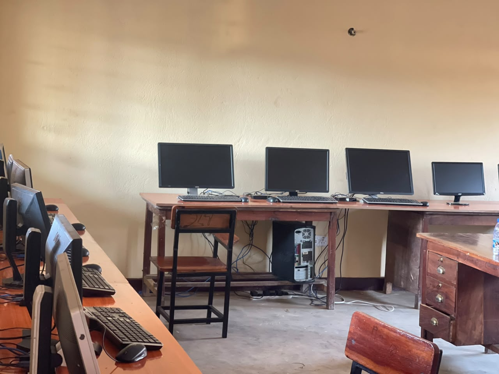
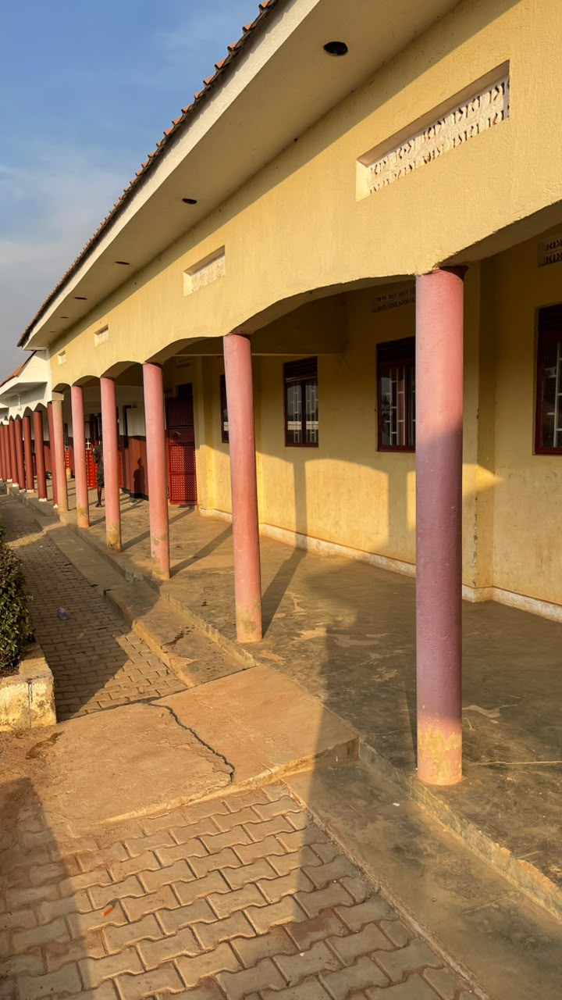

About ITT-Africa
Skills for Sustainable Development
From Challenges to Champions
ITT-Africa School of Health Science, Technology and Innovation was founded on a simple but powerful belief: education has the power to transform lives and communities.
Established by Zubair Bakubye and inspired by the Rotary International ideal of Service Above Self, ITT-Africa began by empowering vulnerable youth and former girl child soldiers through the Mothers’ of Peace Project, equipping them with practical skills, hope, and opportunities for self-reliance.
Today, ITT-Africa has grown into a dynamic institution dedicated to excellence in health sciences, technology, entrepreneurship, and innovation. We provide industry-relevant, competency-based education that prepares students to become skilled professionals, ethical leaders, and innovative problem-solvers.
Supported by a network of partners, including Rotary and other development organizations, ITT-Africa is more than a learning institution—it is a catalyst for sustainable development, economic empowerment, and social transformation.
Your journey begins here. Together, we transform challenges into opportunities and prepare the next generation of leaders who will shape healthier, stronger, and more prosperous communities.


🎯 Our Mission
To provide accessible, high-quality, competency-based education in health sciences, entrepreneurship, technology, and innovation that equips learners with the knowledge, practical skills, ethical values, and entrepreneurial mindset to improve lives, create sustainable livelihoods, and drive inclusive socio-economic development in Africa and beyond.
👁️ Our Vision
To be a leading African institution of excellence in health sciences, entrepreneurship, technology, and innovation, recognized for developing transformative leaders, advancing research, fostering innovation, and promoting sustainable development that positively impacts communities locally and globally.
Our Core Values
Excellence
We pursue the highest standards of teaching, learning, research, innovation, and professional practice through continuous improvement and quality assurance.
Integrity
We uphold honesty, accountability, transparency, and ethical conduct in all our academic, professional, and community engagements.
Innovation
We cultivate creativity, critical thinking, and problem-solving to develop innovative solutions that address real-world challenges.
Entrepreneurship
We empower learners to become job creators, business leaders, and social entrepreneurs who contribute to economic growth and community prosperity.
Sustainability
We integrate environmental stewardship, social responsibility, and economic resilience into our teaching, research, and institutional operations.
Inclusivity
We promote equal opportunity, diversity, equity, and respect, ensuring an inclusive learning environment where every individual can thrive.
Community Engagement
We work collaboratively with communities, industry, government, and development partners to create meaningful and lasting social impact.
Professionalism
We foster competence, discipline, lifelong learning, teamwork, and a commitment to excellence in service.
Leadership
We develop visionary, ethical, and servant leaders who inspire positive change and contribute to national, regional, and global development.
Service
We are committed to serving society through education, research, innovation, volunteerism, and community outreach, improving the quality of life for all.
Aims & Objectives
At ITT-Africa School of Health Science, Entrepreneurship, Technology and Innovation, we are committed to developing skilled professionals, innovative entrepreneurs, ethical leaders, and change-makers who contribute to sustainable development in Uganda, Africa, and the global community. Our educational approach combines academic excellence, practical skills, innovation, research, and community engagement to prepare graduates for the demands of the 21st-century workforce.
Our Aims
1. Empowerment Through Education
To provide high-quality, accessible, and industry-relevant education that empowers learners with the knowledge, practical skills, values, and confidence needed for personal, professional, and lifelong success.
2. Sustainable Development
To integrate the principles of sustainable development into teaching, research, innovation, and community engagement, promoting social equity, economic growth, and environmental stewardship.
3. Innovation and Entrepreneurship
To foster a culture of creativity, innovation, entrepreneurship, and problem-solving that enables students to develop sustainable enterprises, create employment opportunities, and contribute to economic transformation.
4. Community Engagement
To strengthen partnerships with communities, government institutions, industry, development organizations, and international partners in order to expand educational opportunities and improve community well-being through service and collaborative projects.
5. Excellence and Continuous Improvement
To maintain the highest standards of academic quality, institutional integrity, and professional excellence through continuous evaluation, innovation, and improvement of our programs and services.
Our Objectives
Deliver High-Quality Academic Programs
- Develop and offer accredited certificates, diplomas, and professional programs in Health Sciences, Entrepreneurship and Business Development, Technology and Digital Innovation, and Technical and Vocational Education and Training (TVET).
- Combine strong theoretical foundations with practical, competency-based learning.
- Regularly review and update curricula to reflect emerging technologies, labor market needs, and global best practices.
Promote Accessible and Inclusive Education
- Provide affordable tuition and flexible learning opportunities.
- Offer scholarships and financial support for disadvantaged learners.
- Create an inclusive learning environment that embraces diversity, equality, and mutual respect.
- Support women, youth, persons with disabilities, and underserved communities to achieve educational success.
Develop Practical Skills for Employment and Entrepreneurship
- Maintain advanced laboratory and clinical training facilities.
- Offer technical workshops, simulation exercises, and business incubation.
- Arrange internships, apprenticeships, and industrial attachments.
- Collaborate with employers and industry experts to ensure graduates are workforce ready.
Foster Innovation, Research, and Knowledge Creation
- Conduct applied research addressing local, national, and global development challenges.
- Develop innovative solutions using science, technology, and entrepreneurship.
- Support participation in innovation competitions and research conferences.
- Transform research findings into practical solutions for communities and industries.
Champion Sustainable Development
- Promote environmentally responsible practices within our campus.
- Support green technologies and renewable energy initiatives.
- Encourage the responsible use of natural resources in all operations.
- Prepare graduates to lead sustainable development across public, private, and nonprofit sectors.
Strengthen Community and Global Partnerships
- Build partnerships with government ministries, agencies, universities, and research institutions.
- Collaborate with healthcare organizations and private sector companies.
- Work closely with international development partners and NGOs.
- Provide students with practical experience, research opportunities, internships, and international exposure.
Promote Professional Development
- Provide continuous professional development for faculty and staff.
- Encourage lifelong learning and leadership development.
- Offer career guidance, mentorship, and employment support.
- Support graduates in launching businesses and social enterprises through entrepreneurial coaching and incubation.
Ensure Quality Assurance and Continuous Improvement
- Implement comprehensive monitoring and evaluation systems.
- Measure learning outcomes and institutional performance.
- Collect feedback from students, faculty, employers, alumni, and industry partners.
- Use evidence-based decision-making to improve academic programs and institutional effectiveness.
Our Commitment
ITT-Africa School of Health Science, Entrepreneurship, Technology and Innovation is dedicated to producing competent professionals, ethical leaders, innovative entrepreneurs, and responsible global citizens who possess the knowledge, practical skills, and values required to transform communities and drive sustainable development.
Through excellence in education, research, innovation, and community engagement, we aspire to become a leading center of learning that empowers individuals to create meaningful impact, improve lives, and contribute to a more prosperous, inclusive, and sustainable future for Africa and the world.